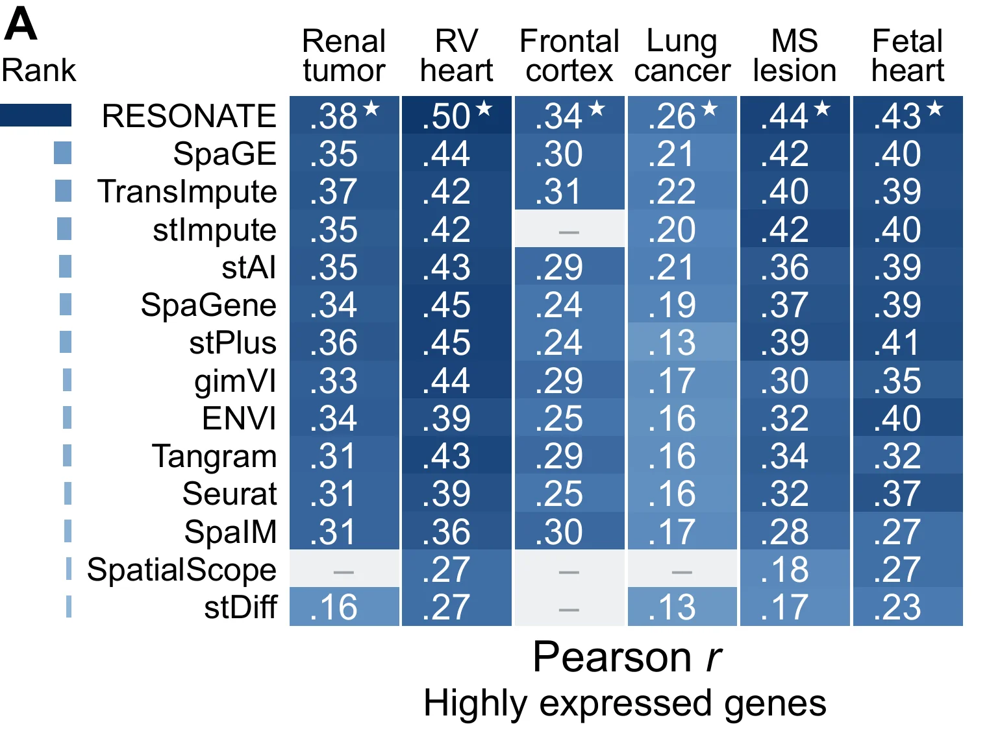
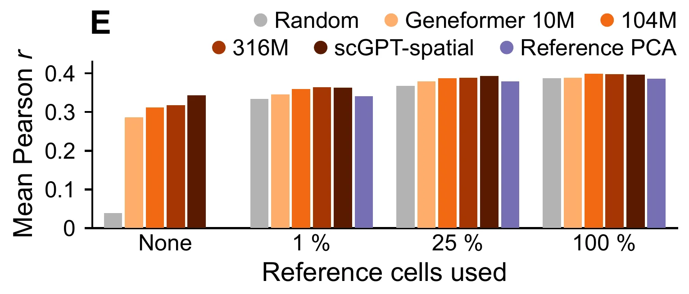
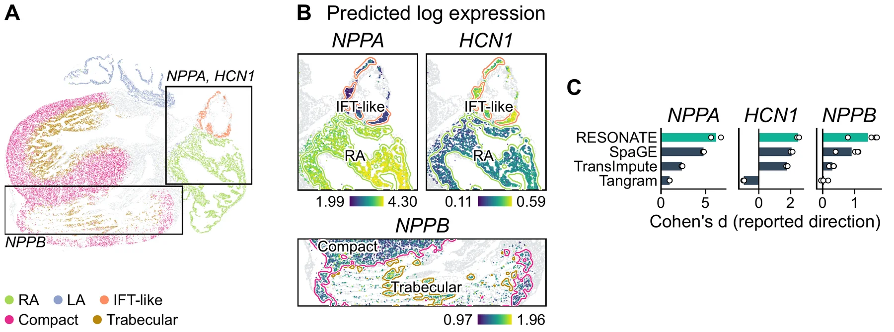

RESONATE
Predicting unmeasured genes and proteins in spatial omics from foundation models and single-cell references
Spatial omics measures the molecular profiles of cells in intact tissue, revealing how cell states vary across anatomical regions and cellular neighborhoods. Imaging-based spatial assays, however, measure targeted panels selected before profiling, leaving many genes and proteins of biological interest unmeasured. Predicting these missing features could extend the analysis of existing tissue sections to pathways and cell states that were outside the scope of the original panel. Most imputation methods learn gene relationships from a single tissue-matched reference. Single-cell foundation models are pretrained on much larger and more diverse collections of cells and could capture gene relationships that transfer across tissues, but mixed results against simple baselines leave their value for spatial imputation unclear. Here, we introduce RESONATE, a foundation-model-based framework that combines pretrained gene embeddings with expression in similar reference cells, relationships with measured genes and spatial neighborhood information. RESONATE achieved state-of-the-art performance, with the highest mean Pearson correlation for held-out genes among the evaluated methods on all ten spatial datasets, and its pretrained embeddings contributed most when matched reference cells were scarce or unavailable. The framework also recovered reported tissue patterns for genes outside the measured panel and extended to spatial protein prediction from RNA.
The problem
Imaging-based spatial assays measure gene activity cell by cell in intact tissue, but only for a panel of genes chosen before the experiment, often a few hundred. Adding genes crowds the signals that must be resolved under the microscope and lengthens imaging, and antibody imaging of proteins is limited to tens of targets. A gene that turns out to matter after profiling is simply missing.
The usual fix is to predict missing genes from a single-cell reference: cells dissociated from the same kind of tissue, which measure all genes but lose their positions. Everything such methods know about a missing gene then comes from that one reference, which covers a limited number of cells and donors, is altered by the dissociation itself, and may not exist for a given tissue. An earlier benchmark found that no method was best on every dataset.
The key idea: describe genes with foundation-model embeddings
RESONATE describes every gene by its embedding from a single-cell foundation model, so that one model can predict any gene that has an embedding. Foundation models such as Geneformer and scGPT, trained on tens of millions of cells from many tissues, summarize each gene as a list of numbers in which genes that behave alike sit close together. In spatial imputation, these models had so far been used to describe cells, not genes.
RESONATE has no parameters tied to a particular gene. It learns one shared rule (given a gene's embedding and a cell's measured genes, predict that gene's level) by hiding genes it can see and predicting them back. Because the rule reads the gene's description rather than its identity, it applies unchanged to genes outside the panel; with no reference at all, it chooses a target's partner genes among the measured ones by how close their embeddings are.
The embedding can also correct a reference's quirks. Tissue dissociation switches on IER3, so in the lung-cancer reference it tracked stress genes, whereas in intact tissue it followed tumor epithelial genes. The foundation-model embedding placed it near epithelial genes and more than doubled its prediction accuracy over an embedding derived from the reference.
For each cell and missing gene, RESONATE adds three estimates, each informed by the gene's embedding:
- A starting level: the gene's typical level, predicted from its embedding, averaged with its level in the most similar reference cells.
- A correction from partner genes: measured genes that co-vary with the target within each reference cell type show whether this cell sits above or below that level, each weighted by a small network that reads both genes' embeddings.
- Spatial context: a transformer reads the measured genes of the cell and its tissue neighbors, and the target's embedding selects what is relevant.
The model first trains on the reference, where every gene is measured, then adapts to the section by predicting its own measured genes while they are hidden. Removing any one component lowered average accuracy in both tissues tested; spatial context contributed modestly.

Most accurate on all ten datasets
On all ten datasets tested, RESONATE predicted hidden genes more accurately than 14 published methods, whereas the best of those methods changed from one dataset to the next. Each method received a spatial section with part of its panel hidden and was scored by the correlation between its predictions and the hidden measurements across cells.
Six datasets came from the imaging platforms Xenium, CosMx and MERFISH, covering kidney tumor, right-ventricular and fetal heart, brain cortex, lung cancer and a multiple-sclerosis lesion. Averaged over them, RESONATE's correlation was 0.392, against 0.353 for SpaGE, the strongest competitor overall. It also led on four transcriptome-wide sequencing datasets (Visium HD, Visium, Slide-tags and Stereo-seq), in which many genes are only sparsely detected.

Embeddings keep it working without a reference
Because genes are described by embeddings, RESONATE kept most of its accuracy even with no single-cell reference. To test this, the model was retrained with all, a quarter, 1% or none of the reference cells. With none, it learned only from the section's own measured genes and never saw the hidden genes measured anywhere; their embeddings were all it knew about them.
Using scGPT-spatial embeddings, it still reached an average correlation of 0.343 across the six imaging datasets, 86% of its accuracy with the full reference. With random vectors of the same size in place of the embeddings, accuracy collapsed to 0.04. The knowledge that transfers sits in the embedding, not in the model's architecture.
With a full matched reference, the choice of embedding mattered little on average, so the embedding's value is greatest where references are small or missing. Larger Geneformer models helped most there: the largest Geneformer embedding beat the smallest by 11.7% without a reference, but by only 2.9% with the full one.

Predictions reflect real biology, and extend to protein
RESONATE's predictions preserve the tissue's cell groups and, for genes the panel never measured, reproduce differences reported in earlier studies. With every panel gene predicted while hidden, clusters of the predicted data matched the measured cell groups more closely than those of other methods (adjusted Rand index, where 1 means identical: 0.672 in fetal heart and 0.764 in lung cancer, versus 0.570 and 0.541 for the next-best method).
For genes outside the panels, five reported differences appeared in every section or patient tested: two heart markers with opposite patterns in right-atrial and inflow-tract-like muscle, a third separating two kinds of ventricular muscle, a naive/memory T-cell program higher in B-cell-rich immune aggregates than in tumor nests, and a low-oxygen (hypoxia) program higher in cancer cells far from blood vessels. RESONATE showed each difference more strongly than three other methods. These are group-level checks, not validation of individual cell values.

Trained on a reference that measures RNA and surface proteins in the same cells, the same framework predicts protein from spatial RNA. In kidney-tumor and breast-cancer sections, its predictions had the highest correlation with measured protein among 11 published methods. The margins were modest, and the runner-up, Seurat, did better on some secondary measures in breast cancer.
Why it matters
Measuring every gene and molecular layer in the same tissue section is unlikely to become routine soon, so predicting what a panel left out complements direct measurement. Because RESONATE draws much of its knowledge about genes from foundation-model embeddings, it stays useful where a matched reference is small or unavailable, and the gains from larger models suggest it will improve as foundation models do.
The predictions are estimates. They supported group-level biology here, but, as with any imputation method, they can produce false signals and do not replace measuring individual cells.
Recognition
- Second Best Overall Poster, JHU Data Science & AI Institute Fall Symposium (Oct 2026)
- Invited talk to Prof. Kellie Smith's lab, Bloomberg–Kimmel Institute for Cancer Immunotherapy (Nov 2026)
- Talk at the JHU GU Oncology Grant Rounds Seminar (Dec 2026)
- Supported by a Provost's Undergraduate Research Award (2026)